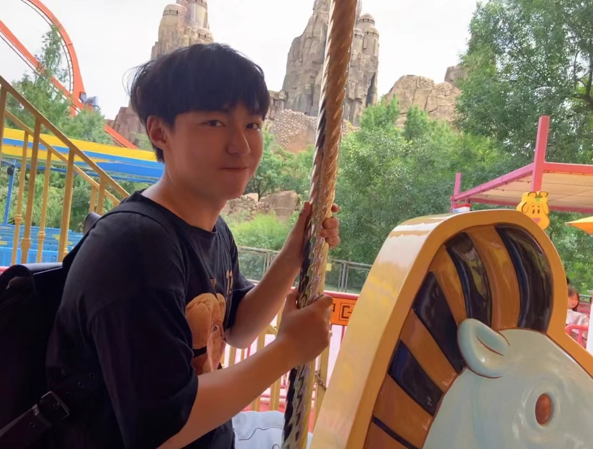

Ph.D. student of Computer Science
National University of Singapore under supervision of Xiaokui Xiao 2022-current
Center for Speech and Language Technologies under supervision of Dong Wang 2021-2022
Bachelor of Science in Engineering
Dept of Electronic Engineering
tsinghua University under supervision of Dongmei Li 2017-2021
Email: lwd17[at]tsinghua.org.com
Github: lwd17
I am a first-year Ph.D. student advised by Prof. Xiaokui Xiao at the School of Computing (SoC), National University of Singapore (NUS). Previously, I graduated from Tsinghua University with a B.S. degree in Electronic Engineering. I’ve had the fortune to work with Prof. Dongmei Li at Tsinghua University. Afterwards, I joined Center for Speech and Language Technologies (CSLT) as a research intern with Dr. Lantian Li and Prof. Dong Wang. Recently I am an intern in Tencent Inc. in Beijing and doing research in ASR and Multimodal Learning, and organizing ICPR MSR 2022 with Dr. Jian Kang, etc.